Arduino Projects
Vigilance
Code HereVigilance explores the concept of surveillance. The goal of the interactor is to grab the treasure from the stand without being caught by the guard.
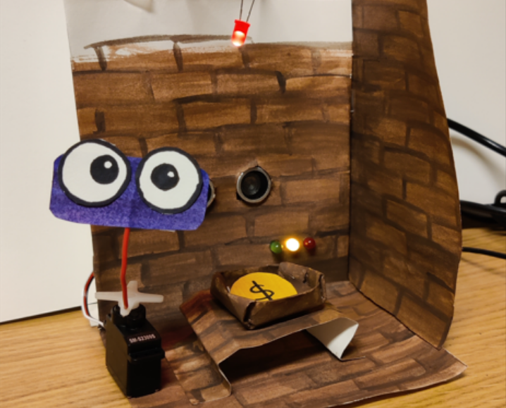
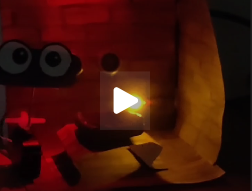

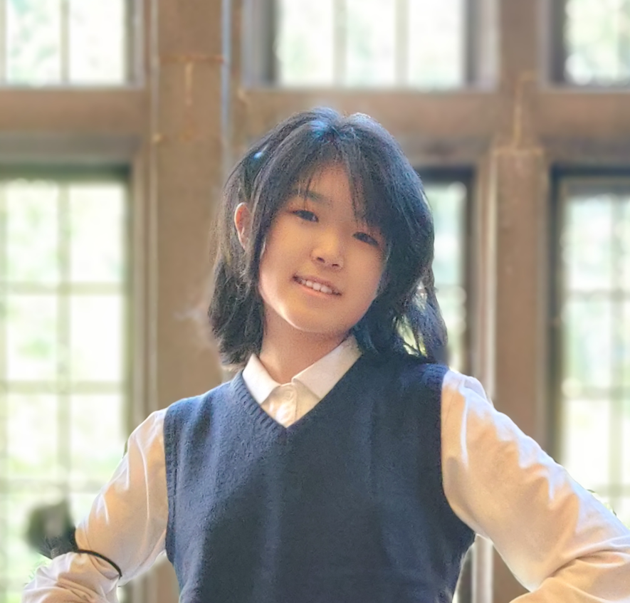
Welcome to my personal website!! I am an Junior at the University of Washington, majoring in Applied Math - Data Science, in the process of becoming an aspiring Data Scientist!!
I specialize in using mathematical models, statistical techniques, and machine learning algorithms to derive actionable insights from complex datasets. I am passionate about solving real-world problems through data-driven solutions, I am eager to contribute to impactful projects in a collaborative environment. Here you will find a collection of my recent work.
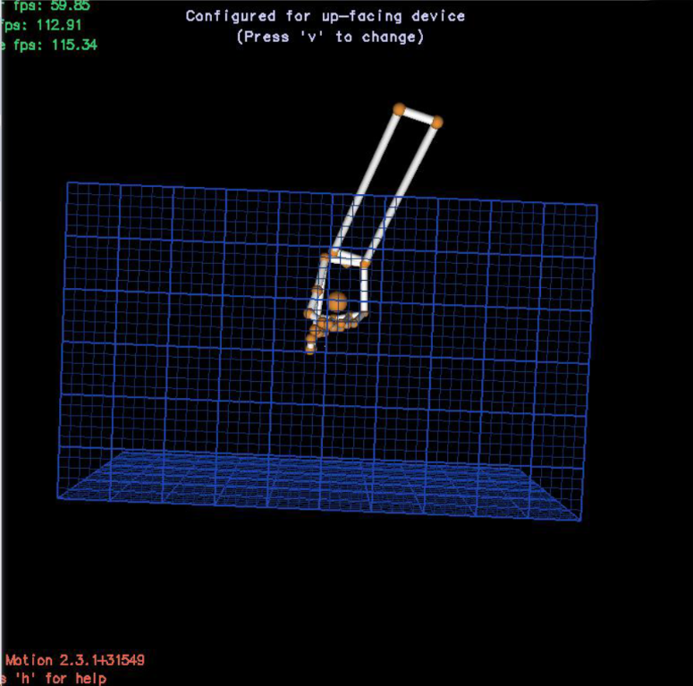
SVC, XGBoost, ANNs: Developed a project to translate American Sign Language (ASL) for individuals with hearing difficulties using Leap Motion for gesture recognition.
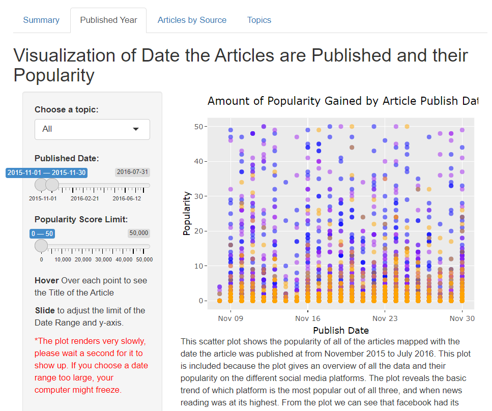
R Shiny, R, and Python: A webpage that analyzes which platform is the preferred source for the general public to get their news.
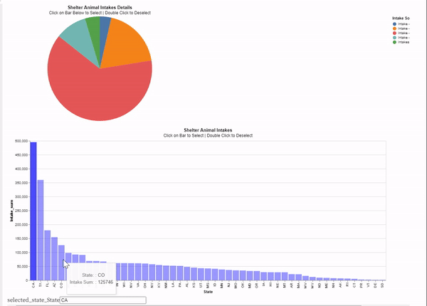
Observable, Vegalite, and D3: A project visualizing the location and status of shelter dogs aimed to persuade potential dog buyers to adopt dogs instead.
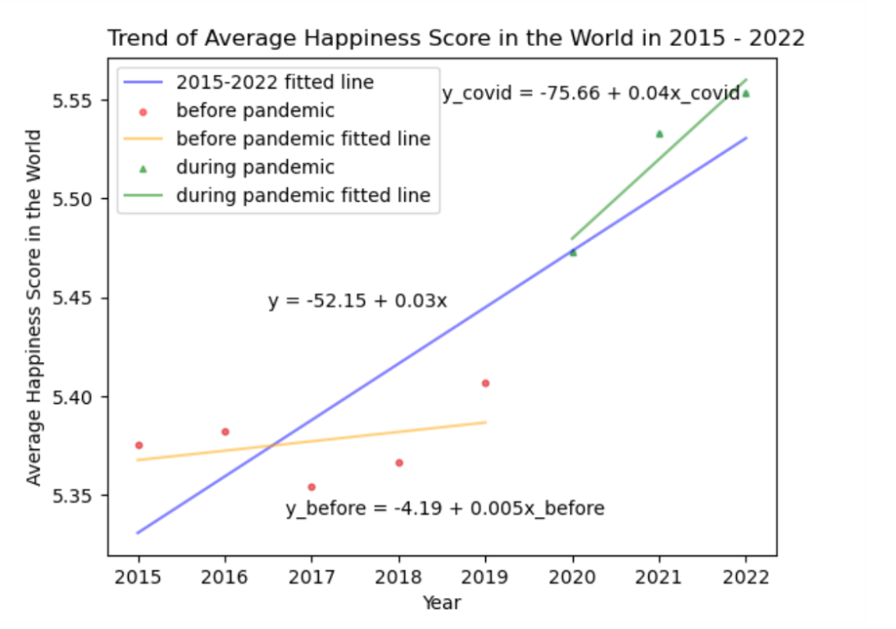
Python and Sklearn: A report on the factors that hold weight in the changes of global happiness scores with consideration of the pandemic with visualization and prediction with machine learning.
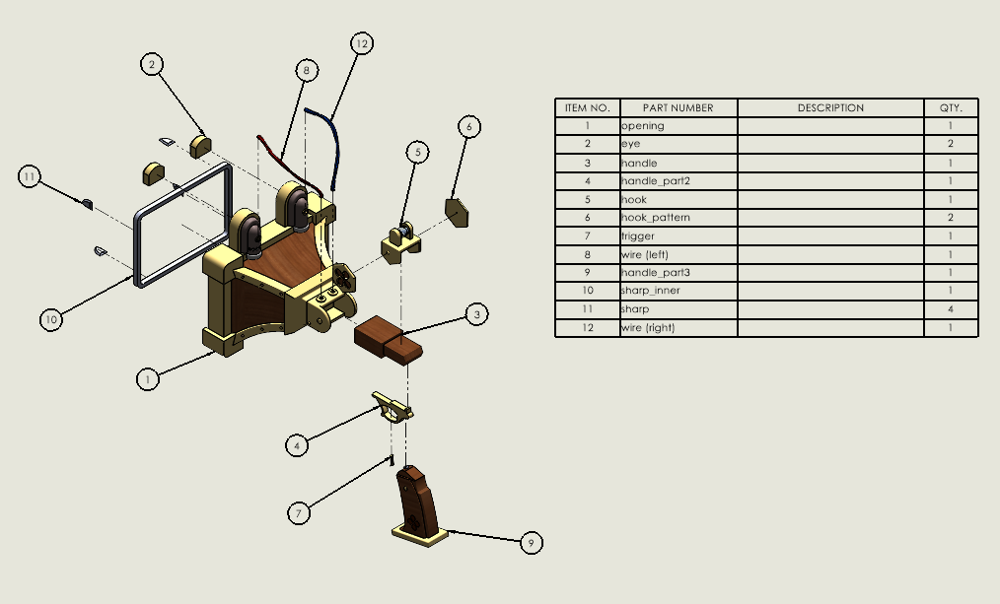
Solid Works: Fan work - 3D-model of the Cat-Flapomat from The Great Ace Attorney Chronicals (Capcom)
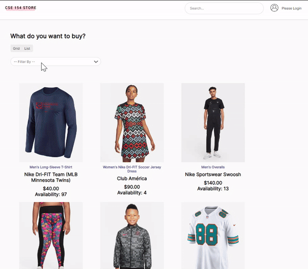
NODE JS + SQL DB: Mock online clothing shop, front end and back end programming.
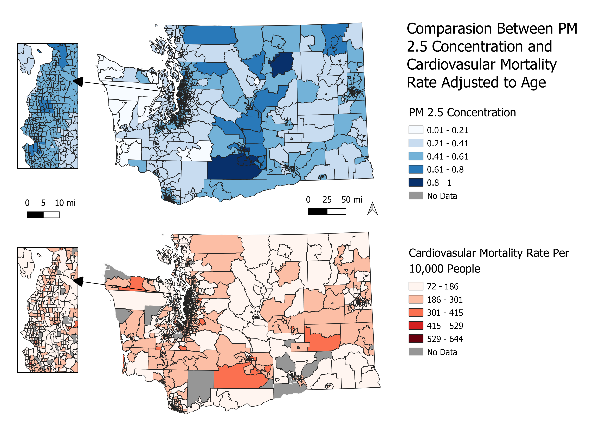
QGIS: Risk of exposure to PM 2.5 Concentration in areas with sensitive cardiovascular disease populations and which of these people have access to adequate healthcare in the state of Washington.
MPI and CUDA: Paralell Processing units and CPU GPU communication
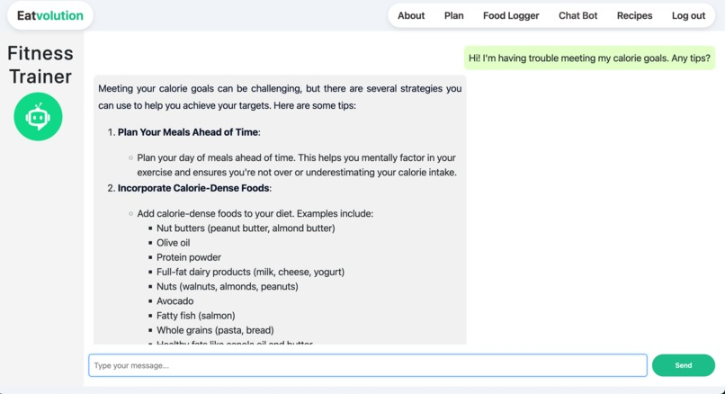
Hackathon Contest Entry - Full Stack Project with javascript, mysql, node.js, react, and typescript, integrating Perplexity AI API.
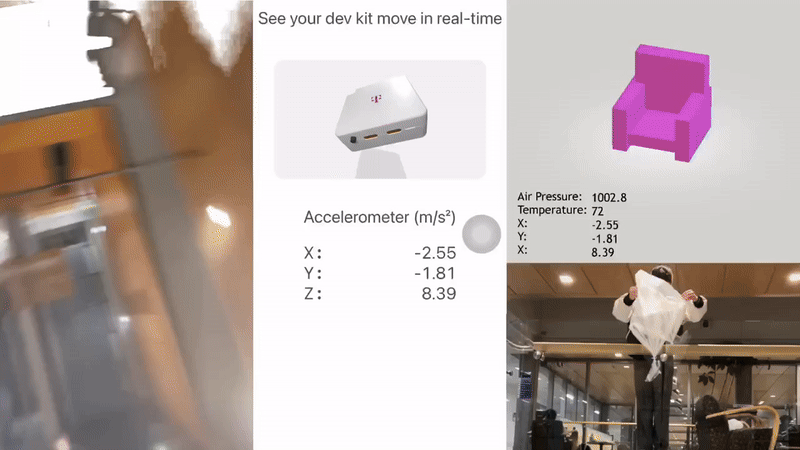
Hackathon Contest Entry - Glide, a project with T-Mobile's DevEdge loT Developer Kit, makes extreme sports like skydiving easy and accessable for anyone.
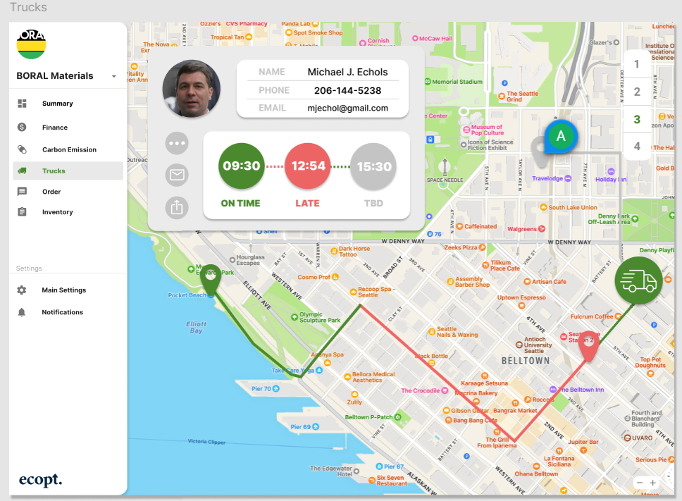
Hackathon Contest Entry - Second Place: A Green Logistics project on how construction businesses can contribute to a carbon neutral environment by creating an platform for them to mangage their resource allocations.
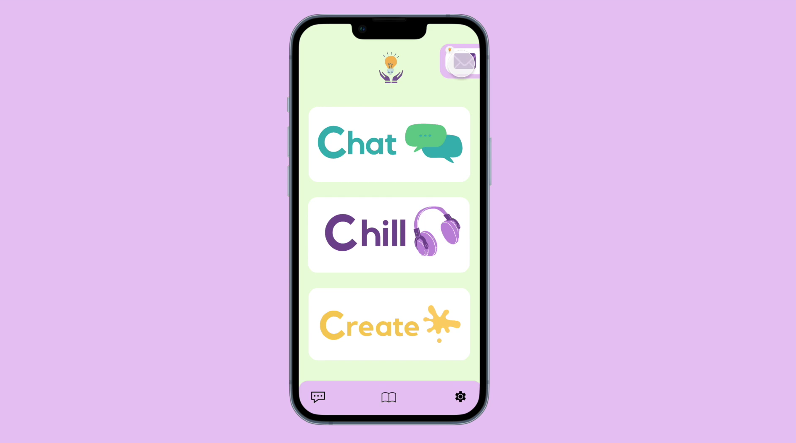
Hackathon Contest Entry - Cybersource Visa Sponsership Award: a prototype app aimed to increase student wellness and connectivity.
Vigilance explores the concept of surveillance. The goal of the interactor is to grab the treasure from the stand without being caught by the guard.


As you go into the forest, you see a magical house nearby. It greats you with welcoming, cheerful music as you approach. There is a strange red glow in one of the houses. You think that there is hidden treasure inside and try to pull open the house of the door to see whats inside, but you’ve poked too far, the music switches to a terrible slow sound and the lights close. The work expresses what would happen is one were to get too close or involved in something that that know nothing about.
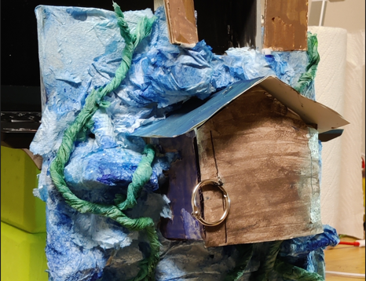
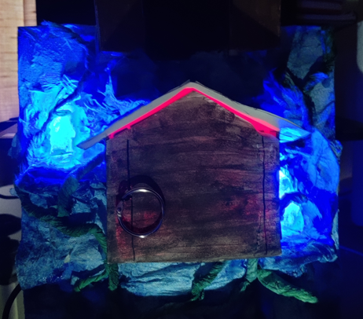
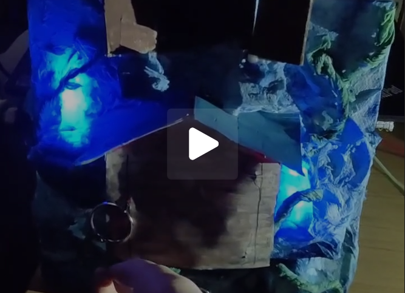
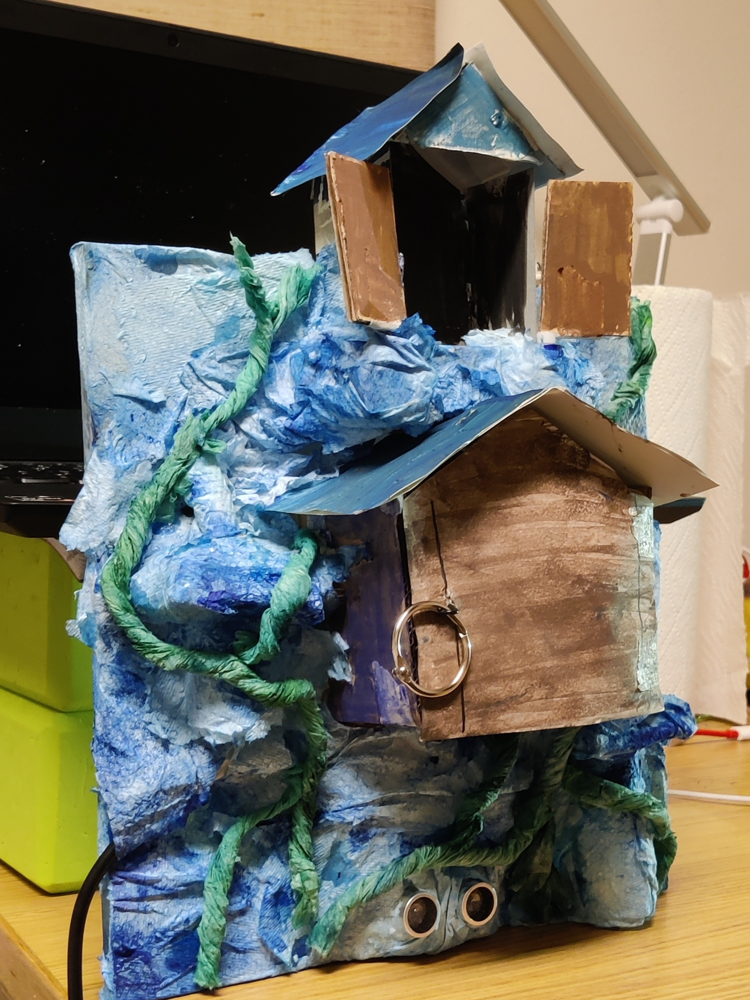